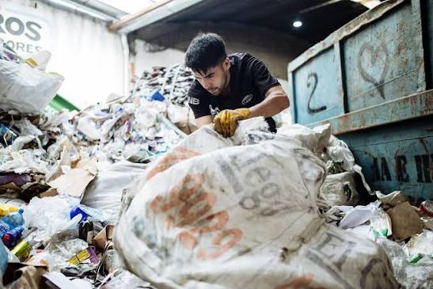

Recuperamos residuos, construimos trabajo digno y cuidamos nuestras calles
Somos trabajadoras y trabajadores recicladores formales e informales de Berazategui. Visibilizamos nuestra labor, eliminamos estigmas y reinsertamos materiales reciclables al mercado formal sin intermediarios abusivos.
¿Tenés material reciclable acoplado o querés comprar directo a los recicladores sin intermediarios?
Rutas de Recolección
Conocé los recorridos y horarios de los recuperadores en tu barrio
Ruta 1: Calle 14 a Calle 21
Recolección de cartón, papel y plásticos limpios. Frecuencia matutina.
Ruta 2: Av. 53 y alrededores
Puntos verdes y recolección domiciliaria de vidrios y metales.
Ruta 3: Estación y zona comercial
Recorrido intensivo en comercios adheridos a la red de reciclaje.
Ruta 4: Circuito Estación
Retiro diferenciado de secos en zonas residenciales y gastronomía.
Ruta 5: Av. Otto Bemberg
Recolección programada de plásticos PET y envases de aluminio.
Ruta 6: Cmo. General Belgrano
Cobertura en galpones industriales e instituciones educativas.
Servicios y Actividades de la Red
Organizadas en 2 bloques por fila (3 columnas cada tarjeta)
Recolección Puerta a Puerta
Retiro programado de cartón, papel, vidrio y plásticos en comercios, escuelas y domicilios de Berazategui.
Clasificación y Enfardado
Segregación técnica por tipo de polímero (PET, PEAD) y prensado de fardos industriales de alta densidad.
Comercialización Directa
Venta mayorista de volúmenes de material acoplado a la industria sin intermediarios ni galpones especuladores.
Educación e Inclusión
Talleres comunitarios para erradicar la estigmatización y promover la separación responsable en origen.
Centro de Acopio y Materiales Recuperados
1 Tarjeta principal a la izquierda + 4 tarjetas de imagen a la derecha

Gran Centro de Acopio Comunitario de Berazategui
Disponemos de stock permanente de materiales secos clasificados y pesados con balanza digital transparente. Garantizamos trazabilidad, volumen constante y entrega sin intermediarios.

